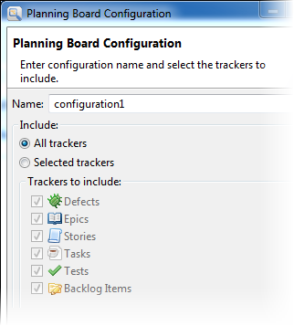
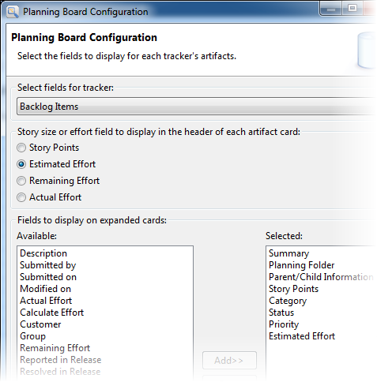
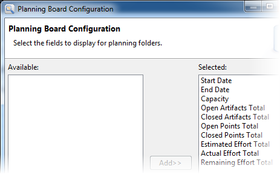
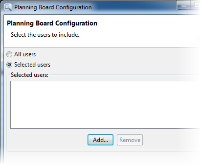

As a TeamForge project administrator, you
can configure multiple planning boards for a project. You might do this if you want to
restrict the tracker types that can be displayed, or if you want to configure the layout of
the fields that can appear on the artifact cards.
However, configuring a planning board is optional. You do not have to set one up
because there is a default layout that includes everything.
-
To configure the planning board, right-click the project and choose
Configure Planning Board ....
The planning board configuration screen appears.
-
To create a new configuration, click Add.

-
Provide a name for the configuration.
-
Select the trackers whose fields you want to configure.
-
Click Next.
-
Select a tracker.

-
Indicate which field you want to use to specify the story size.
Typically, you would use either Story Points or Estimated
Effort.
-
Select the fields you want displayed on expanded cards.
Non-expanded cards display just the Agile-focused
fields: title, description, assigned user, story size and the planning
folder the artifact belongs to.
Note: The fields you select here apply only to the
tracker shown in the Select fields for tracker
dropdown. If you have several trackers and want a different configuration
for each, you need to select each tacker and specify its fields. If you want
the same configuration for all trackers, just specify the fields for one
tracker and then select the Apply these choices for all
trackers option.
When you're done, click
Next.
-
Specify the fields you want displayed for planning folders.
These fields are displayed when a planning folder is expanded in the planning
area of the planning board.

Click Next.
-
Select the project members to whom artifacts can be assigned. If you want to include a subset of users rather than all project members, click Add and include them.
Note: If you included selected users, only the artifacts
assigned to those users will appear on the planning board. If you
want unassigned artifacts displayed, select the “None” user as well.

-
Click Finish.